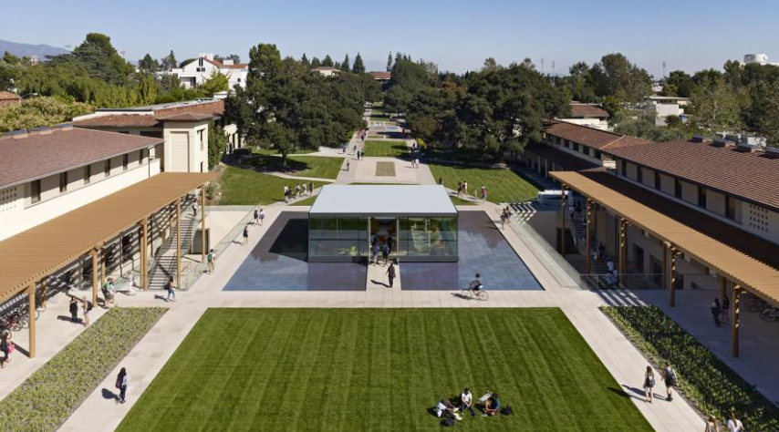
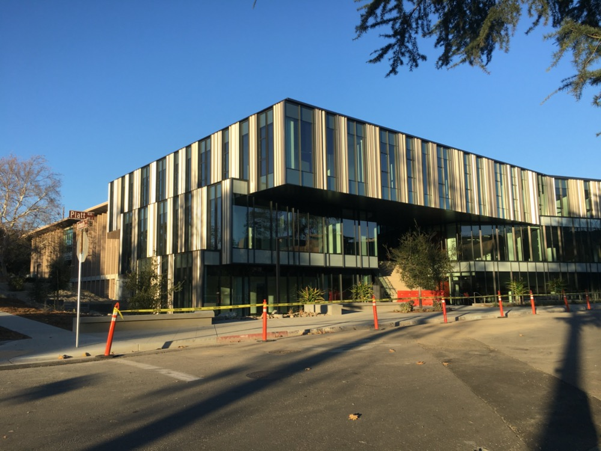

Claremont Colleges
The Claremont Colleges are a consortium of five SoCal institutions.
We list them here.
The 5Cs: a list
The above's an unordered list. At the 5Cs, there's no order!
Today's featured colleges: Pitzer and Pomona


Claremont destinations
- Pepo Melo, a fantastic font of fruit!
- Starbucks, the center of the "city"
-
In-and-out Burger (not in Claremont, alas, but close!)
- Nosy Neighbors for fresh buckets of donuts!
- 42nd Street Bagel, certainly well-numbered!
Now-complete construction:

It's McGregor, the Greg, revealed!